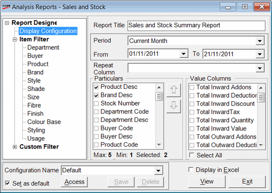

This option is used to configure the required fields of a sales and stock summary report.
The Sales and Stock Summary Report generated with this configuration includes summary of all sales and stock related transactions for analysis. Compare sales showroom-wise, day-of-the-week-wise, month-wise, all purchases, purchase returns, opening stock and closing stock related fields for analysis.
How to reach: Reports > Analysis Reports > Report Designer > Sales & Stock
The Analysis Reports - Sales and Stock window is displayed.

.Display Configuration
Report Title: Displays the default title of the report. Edit/ enter the title of your choice.
Period: Select the period for which the report is to be configured.
Repeat Column: Select the column to be repeated from the list.
Particulars:Select the particulars to be displayed in the Analysis Report.
Value Columns: Select columns with values to be displayed in the report.
Select All: To select all the Value Columns.
Item Filters: Select the Code and Description of the Item Classifications.
Department: Select the Code and Description of the Department.
The other item filters are, Buyer, Product, Brand, Style, Shade, Size, Fibre, Finish, Colour Base, Styling and Usage.
Note: You can filter the search by placing the cursor in the Code or Description column and typing the first few characters.
Custom Filter: Apply the Custom Filter to the Sales and Stock summary Report.
Consignment: Select either Consignment Items or Non Consignment Items to view transaction details pertaining to Consignment Items or Non Consignment Items. By default, transactions of both, Consignment Items and Non Consignment Items are selected.
Week Days: Select the code and description of the day/ days of the week.
Configuration Name: Enter a name under which the current selections are to be saved. The saved settings can be recalled any number of times to generate the report. Later, you may modify the settings and save the changes, if required.
Set as default: Select to save the current selections as the default so that any time this report is selected, these filters are used for viewing the report.
Display in Excel: Select to display the report in an Excel sheet format.